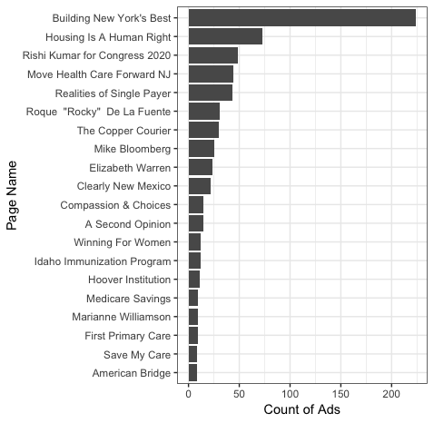

Introduction
This vignette serves two distinct, but related, purposes:
To document the steps required to get started with the Facebook Ad Library API.
To through getting started with the
Radlibrarypackage to query, analyze, and visualize data from the Facebook Ad Library API
Getting Set Up
There are three basic steps required to begin used the Facebook Ad Library API.
- Confirm your identity and location
- Create a Facebook Developer account
- Add a new app
Confirm your identity and location with Facebook
Currently, accessing the Facebook Ads API utilizes the same verification process that is required to run ads about social issues, elections or politics. To complete this process, go to the ID section of your Facebook settings. To complete this process, you will need to submit a form of national identification to confirm your identity. If you haven’t already confirmed your ID, it typically takes 1-2 days to complete this step.
Note: Your identification will need to match your physical location for verification purposes.
Create a Facebook Developer account
Visit Facebook for Developers and select Get Started to sign up for a developer account. As part of account creation, you’ll need to agree to our Platform Policy.
Add a new App
Once you have an account, you’ll need to create a new app. Go to the Explorer tool and click “Create App” under “My Apps”.
IMPORTANT NOTE ABOUT ACCESS TOKENS Anyone who obtains your access token can use it to access your Facebook account until the token expires. Treat your access token as you would a password. Avoid putting it in source code, in your command history, and especially on GitHub or somewhere else online.
Getting Started with Radlibrary
To get started using the Radlibrary package, you’ll want
to take the following steps:
- Retrieve and store your access token
- Build a query
- Submit the query
- Analyze the results
Retrieve and store your access token.
You can find your access token at the Graph API Explorer tool.
Note that this token can only be used for a limited period of time
and will have to be periodically refreshed. If you’d like to use
Radlibrary functionality to generate a persistent token,
see Generating persistent
tokens. If you do not need a long-term token, you can save your
token to your environment. Note: the best way to store
your access token interactively is to use readline and
paste the token at the prompt.
## This will store your access token in your R history—not recommended!
token <- "PASTED VALUE FROM https://developers.facebook.com/tools/explorer/"
## better:
token <- readline()
# now paste at the promptThis way, your access token won’t be stored in your R history.
Build a query
Let’s build our first query!
We’ll start with a simple example. Let’s look for all active ads within the United States that served impressions in the past 90 days and are related to health care.
query <- adlib_build_query(ad_reached_countries = 'US',
ad_active_status = 'ACTIVE',
search_terms = "healthcare",
fields = "ad_data")There are numerous parameters to the adlib_build_query
function (for more, see ?adlib_build_query). In the above,
we’re passing five parameters:
-
ad_reached_countries = 'US': this tells they query we only want to return ads shown in the United States. Note that the query submission will fail if you try and submit an ISO country code that you are not verified for. -
ad_active_status = 'ACTIVE': this tells they query we only want to return ads that are currently active. -
impression_condition = 'HAS_IMPRESSIONS_LAST_90_DAYS': this tells they query we want to see any ad that has served impressions in the last 90 days. -
search_terms = "healthcare": this is the search string for the query. Note: You can only search for single keywords. For example, you can search “health care,” but the system will search for these words separately (i.e. “health” and “care”). -
fields = "ad_data": this is the fields to include in the response. In this example, we’re looking strictly at ad data. We could also search for aggregated data related to regional delivery or demographics.
Submit a query
Let’s submit the query from the previous section for analysis.
response <- adlib_get(params = query, token = token)The adlib_get() requires a query and a token. It will
return an object type of adlib_data_response which contains
ad data for up to 1,000 rows matching the query parameters. Do you need
to retrieve more than 1,000 rows? If so, check out the Pagination section.
This data object has numerous metadata attributes:
-
date: the time stamp of the query submission -
has_next: A Boolean value indicating whether there are still pages available after the current search returned (see section on pagination below) -
next_page: The URL to call the next page of responses -
fields: the fields available in the query -
data: the data returned.
Analyze the results
You can convert your results into a tibble using
as_tibble:
results.tibble <- as_tibble(response, censor_access_token = TRUE)This will transform the information stored in data and
in fields from your adlib_data_response into a
tidy data frame (i.e., a tibble) for analysis. The example content below
from the above:
head(results.tibble)
# A tibble: 6 x 15
# ad_creation_time ad_creative_body ad_creative_lin… ad_creative_lin…
# <dttm> <chr> <chr> <chr>
# 1 2019-12-09 02:24:23 I believe in He… NA NA
# 2 2019-12-09 00:24:56 Will you stand … act.actwireless… Legislators sho…
# 3 2019-12-08 22:23:09 "https://youtu.… youtube.com My name is Stev…
# 4 2019-12-08 22:22:36 Will you stand … act.actwireless… Legislators sho…
# 5 2019-12-08 21:53:34 "Sen. Warren fl… ma.publiceditor… Sen. Warren is …
# 6 2019-12-08 21:45:55 "Marvin Lim for… www.marvinlimfo… NA
# … with 11 more variables: ad_delivery_stop_time <dttm>, currency <chr> ... As an example - we can display this data visually. Let’s use
ggplot2 and visualize the top 20 page names by number of
ads created.
results.tibble %>%
group_by(page_name) %>%
select(page_name) %>%
summarize(n = n()) %>%
ungroup() %>%
top_n(n = 20) %>%
ggplot(aes(reorder(x = page_name, n), y = n)) +
geom_bar(stat="identity") +
xlab("Page Name") +
ylab("Count of Ads") +
theme_bw() +
coord_flip()
Generating Persistent Tokens
You may want to generate a persistent token that allows you to avoid
having to refresh your token every hour. You can use the
App ID and App Secret to generate a persistent
token that works for 60 days. It is important to store this secret
securely. To facilitate this, we’ve included functionality from keyring
library.
To begin, run this command:
This will generate the following prompt:
Visit https://developers.facebook.com/ and navigate to your App's basic settings
to find your Application ID and App Secret.
These will be securely stored in your computer's credential store.
Press <Enter>If you’ve already stored an Application ID at some point, you’ll also receive a prompt as to whether or not you’d like to overwrite your previously stored information.
You’ll then be asked via prompt to access and input your Application
ID and your App Secret. You can then run the
adlib_set_longterm_token() command, follow the prompts, and
store your persistent access token within your system’s credential
store.
If you have a long-term token stored, Radlibrary will
find it automatically when you run adlib_get
response <- adlib_get(query = query)You can also retrieve your stored token at any time with
token_get().
Pagination
You may want to retrieve more data than is available in a single API
call. The Radlibary package handles this with an easy
pagination implementation.
For example:
query <- adlib_build_query(ad_reached_countries = 'US',
ad_active_status = 'ALL',
impression_condition = 'HAS_IMPRESSIONS_LIFETIME',
search_terms = "healthcare",
fields = "ad_data")
result <- adlib_get(query, token_get())
df <- as_tibble(result)
dim(df)
# [1] 1000 17versus
query <- adlib_build_query(ad_reached_countries = 'US',
ad_active_status = 'ALL',
search_terms = "healthcare",
fields = "ad_data")
result_paginated <- adlib_get_paginated(query, max_gets = 10, token_get())
df_paginated <- as_tibble(result_paginated)
dim(df_paginated)
# [1] 10000 17